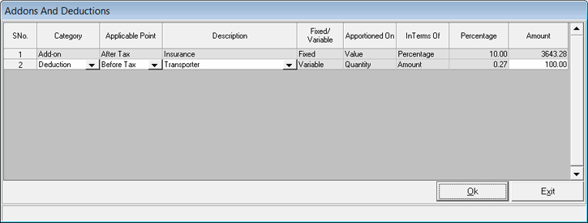

The Addons And Deductions window pops up beneath the Item Details grid when you press F6 from the goods inward window.
Note: If fixed add-ons or deductions are catalogued under Stock Factors, then the same are applied by default and can be viewed by pressing F6. The add-ons or deductions can be altered as per the requirement, during billing, if they are catalogued as Variable under Stock Factors. Click here to know how to catalogue Addons and Deductions.
Multiple Addons and Deductions can be configured for each transaction type in System Parameters.

Select the Category, Applicable Point, Description, Fixed/ Variable, Apportioned On, In Terms Of, Percentage and Amount.
Addons
Add-on is an extra amount, which is added to the total sales value during billing. The add-on details grid displays the add-on values for that particular bill. You can add any number of Add-ons, if catalogued, in a bill.
Deductions
Deduction is an amount, which is deducted from the total value during goods transaction. The deduction details grid displays the deduction values for that particular bill. You can add any number of deductions, if catalogued, in a transaction .
Category: Select the type (Add-on) from the drop-down list.
Press Tab and the rest of the details of the grid are populated.
Description: Displays the type of Addons or Deductions.
Fixed/Variable: This field indicates whether the selected Add-on is Fixed (F) or Variable (V).
Apportioned On: This field indicates whether the selected Add-on is applied as a Value or Quantity.
InTerms Of: This field indicates whether the selected Add-on is applied as a Percentage or Amount.
Amount: The amount is displayed.